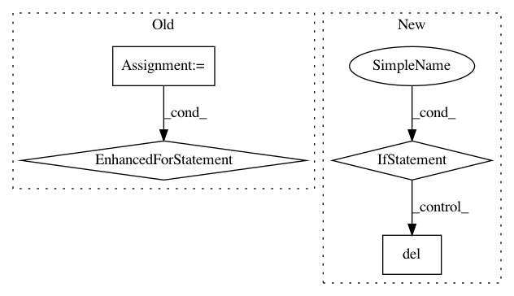

b7cd20e62f7dfb7b28407c84cd6b48098fddb915,src/sdk/pynni/nni/bohb_advisor/bohb_advisor.py,BOHB,handle_trial_end,#BOHB#Any#,493
Before Change
logger.debug(
"bracket %s next round %s, hyper_configs: %s", s, i, hyper_configs)
self.generated_hyper_configs = self.generated_hyper_configs + hyper_configs
for _ in range(self.credit):
self._request_one_trial_job()
// Finish this bracket and generate a new bracket
elif self.brackets[int(s)].no_more_trial:
self.curr_s -= 1
self.generate_new_bracket()
for _ in range(self.credit):
After Change
logger.debug("Tuner handle trial end, result is %s", data)
hyper_params = json_tricks.loads(data["hyper_params"])
self._handle_trial_end(hyper_params["parameter_id"])
if data["trial_job_id"] in self.job_id_para_id_map:
del self.job_id_para_id_map[data["trial_job_id"]]
def _send_new_trial(self):
while self.unsatisfied_jobs:
ret = self._get_one_trial_job()
if ret is None:
In pattern: SUPERPATTERN
Frequency: 3
Non-data size: 4
Instances
Project Name: microsoft/nni
Commit Name: b7cd20e62f7dfb7b28407c84cd6b48098fddb915
Time: 2019-07-11
Author: Quanlu.Zhang@microsoft.com
File Name: src/sdk/pynni/nni/bohb_advisor/bohb_advisor.py
Class Name: BOHB
Method Name: handle_trial_end
Project Name: keras-team/keras
Commit Name: d78c982b326adeed6ac25200dc6892ff8f518ca6
Time: 2019-01-22
Author: andrew.docherty@data61.csiro.au
File Name: keras/engine/network.py
Class Name: Network
Method Name: from_config
Project Name: chainer/chainercv
Commit Name: a7706fbde22887909db42f96a696437c084c05db
Time: 2017-05-31
Author: Hakuyume@users.noreply.github.com
File Name: chainercv/evaluations/eval_detection_voc.py
Class Name:
Method Name: eval_detection_voc